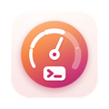

Chăm Luyện
Luyện bài lớp 1 và lớp 4, có bạn nhỏ đọc đề và gợi ý.
Ứng dụng làm gì
Chăm Luyện giúp các bé tiểu học tự luyện bài và làm những bài kiểm tra ngắn: lớp 1 có Toán, Tiếng Việt, Đánh vần và Tập viết; lớp 4 có Toán, Tiếng Việt, Tiếng Anh, Lịch sử và Địa lí, Khoa học. Ứng dụng không dạy bài mới: nó ở bên bé trong lúc bé làm bài, như một người bạn lớn kiên nhẫn.
- Mọi câu hỏi đều được đọc to, bằng giọng miền Bắc hoặc miền Nam, để bé chưa đọc thạo vẫn tự làm bài được. Phần Tiếng Anh được đọc bằng giọng Anh Mỹ.
- Gợi ý từng bước. Đầu tiên là cách làm, sau đó một gợi ý lớn hơn, rồi một lời giải thích đếm theo giọng đọc. Ứng dụng không bao giờ đưa đáp án ngay.
- Tập viết chữ trên ô li. Bạn nhỏ chỉ từng nét và nói chỗ đặt bút, hướng đi và chỗ dừng bút.
- Một người bạn do bé tự tạo. Chọn con vật, màu sắc, mắt, miệng và trang phục như khăn quàng đỏ hay nón lá. Khi bé làm sai, bạn nhỏ động viên, không bao giờ trách mắng.
- Ngôi sao và giờ nghỉ. Bài kiểm tra và giờ luyện tập mang lại ngôi sao và vài phút chơi một trò nhỏ. Người lớn đặt điều kiện và độ dài giờ nghỉ.
- Không dùng AI. Mọi câu bé nghe đều được viết sẵn; bạn nhỏ chọn câu nói theo những quy tắc đơn giản ngay trên thiết bị.
Theo Chương trình GDPT 2018 lớp 1 và lớp 4, với câu hỏi do chúng tôi tự soạn. Cần iPhone hoặc iPad chạy iOS 17 trở lên.
Quyền riêng tư
Chăm Luyện không có quảng cáo, tài khoản, phân tích hay theo dõi, và không thông tin nào về bé rời khỏi thiết bị. Ứng dụng chỉ dùng mạng cho một việc: tải thêm giọng đọc, vốn chỉ là các tệp âm thanh. Chính sách quyền riêng tư đầy đủ nói rõ hơn.
Các ứng dụng khác của cùng nhà phát triển
Những ứng dụng nhỏ, mỗi ứng dụng làm tốt một việc. Không tài khoản, không quảng cáo, và không ứng dụng nào theo dõi bạn.
 StatuetteCPU, bộ nhớ, ổ đĩa và mạng ngay trên thanh menu.Mac
StatuetteCPU, bộ nhớ, ổ đĩa và mạng ngay trên thanh menu.Mac TocketteHẹn giờ chỉ bằng một cú kéo từ thanh menu.Mac
TocketteHẹn giờ chỉ bằng một cú kéo từ thanh menu.Mac ZonetteMọi múi giờ bạn quan tâm, chỉ một cú nhấp.MaciPhone & iPadAndroid
ZonetteMọi múi giờ bạn quan tâm, chỉ một cú nhấp.MaciPhone & iPadAndroid LunetteMặt Trăng và Mặt Trời, chỉ trong một cái nhìn.MaciPhone & iPadAndroid
LunetteMặt Trăng và Mặt Trời, chỉ trong một cái nhìn.MaciPhone & iPadAndroid LunaretteÂm lịch, theo bốn truyền thống.MaciPhone & iPadAndroid
LunaretteÂm lịch, theo bốn truyền thống.MaciPhone & iPadAndroid PausetteNhững quãng nghỉ nhẹ nhàng cho mắt và lưng.Mac
PausetteNhững quãng nghỉ nhẹ nhàng cho mắt và lưng.Mac PoisetteNgồi thẳng lưng, có AirPods bạn đang đeo nhắc nhở.MaciPhone & iPad
PoisetteNgồi thẳng lưng, có AirPods bạn đang đeo nhắc nhở.MaciPhone & iPad HushetteÂm thanh nền êm dịu, không bao giờ lặp lại.MaciPhone & iPadAndroid
HushetteÂm thanh nền êm dịu, không bao giờ lặp lại.MaciPhone & iPadAndroid TapsodyTiếng bàn phím cơ mỗi khi bạn gõ.Mac
TapsodyTiếng bàn phím cơ mỗi khi bạn gõ.Mac ThrumlineNhịp tim của bạn, trực tiếp trên thanh menu.Mac
ThrumlineNhịp tim của bạn, trực tiếp trên thanh menu.Mac NightjarGiữ cho Mac luôn thức. Thật lòng.Mac
NightjarGiữ cho Mac luôn thức. Thật lòng.Mac UmbretteLàm tối mọi thứ trừ cửa sổ bạn đang làm việc.Mac
UmbretteLàm tối mọi thứ trừ cửa sổ bạn đang làm việc.Mac PrompetteMáy nhắc chữ ngay bên dưới camera.MaciPhone & iPadAndroid
PrompetteMáy nhắc chữ ngay bên dưới camera.MaciPhone & iPadAndroid TalletteMột cuộn băng giấy cho các phép cộng của bạn.MaciPhone & iPadAndroid
TalletteMột cuộn băng giấy cho các phép cộng của bạn.MaciPhone & iPadAndroid ProbetteMọi thông tin kỹ thuật của tệp media, bằng lời dễ hiểu.MaciPhone & iPadAndroid
ProbetteMọi thông tin kỹ thuật của tệp media, bằng lời dễ hiểu.MaciPhone & iPadAndroid BindetteBiến các tệp âm thanh thành một cuốn sách nói hoàn chỉnh.MaciPhone & iPadAndroid
BindetteBiến các tệp âm thanh thành một cuốn sách nói hoàn chỉnh.MaciPhone & iPadAndroid LettretteMở tệp winmail.dat và .msg đúng như lúc được gửi.MaciPhone & iPad
LettretteMở tệp winmail.dat và .msg đúng như lúc được gửi.MaciPhone & iPad Nhanh TayXếp bốn đáp án theo thứ tự. Thật nhanh.MaciPhone & iPadAndroid
Nhanh TayXếp bốn đáp án theo thứ tự. Thật nhanh.MaciPhone & iPadAndroid PinetteGhi chú luôn trong tầm mắt.MaciPhone & iPadAndroid
PinetteGhi chú luôn trong tầm mắt.MaciPhone & iPadAndroid
UsagetteGiới hạn sử dụng Claude ngay trên thanh menu.Mac- SquiggoVẽ cùng một người bạn thân thiện.MaciPhone & iPadAndroid
 ForemanCông việc, báo giá và hóa đơn cho thợ.MaciPhone & iPadAndroid
ForemanCông việc, báo giá và hóa đơn cho thợ.MaciPhone & iPadAndroid TilewakeTrò xếp hình trượt có bức tranh thức dậy.MaciPhone & iPadAndroid
TilewakeTrò xếp hình trượt có bức tranh thức dậy.MaciPhone & iPadAndroid